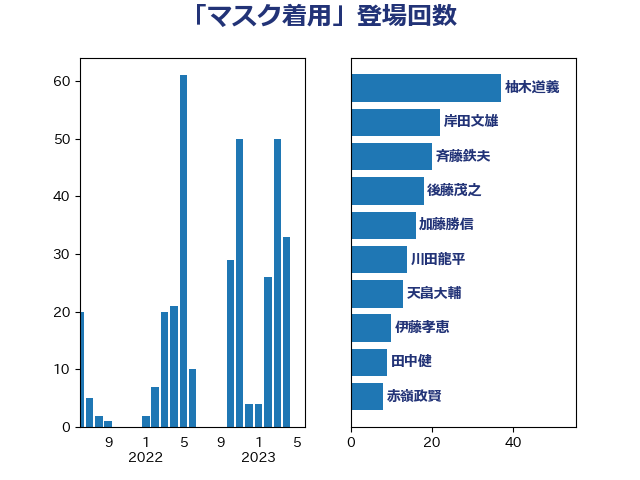

単語「マスク着用」

| 柚木道義 | 立憲民主党 | 37 回 |
| 岸田文雄 | 自由民主党 | 22 回 |
| 斉藤鉄夫 | 公明党 | 20 回 |
| 後藤茂之 | 自由民主党 | 18 回 |
| 加藤勝信 | 自由民主党 | 16 回 |
| 川田龍平 | 立憲民主党 | 14 回 |
| 天畠大輔 | れいわ新選組 | 13 回 |
| 伊藤孝恵 | 国民民主党 | 10 回 |
| 田中健 | 国民民主党 | 9 回 |
| 赤嶺政賢 | 日本共産党 | 8 回 |
| 生稲晃子 | 自由民主党 | 7 回 |
| 永岡桂子 | 自由民主党 | 7 回 |
| 末松信介 | 自由民主党 | 6 回 |
| 山田勝彦 | 立憲民主党 | 6 回 |
| 青山大人 | 立憲民主党 | 5 回 |
| 西村康稔 | 自由民主党 | 5 回 |
| 阿部司 | 日本維新の会 | 4 回 |
| 礒崎哲史 | 国民民主党 | 4 回 |
| 本田太郎 | 自由民主党 | 4 回 |
| 住吉寛紀 | 日本維新の会 | 4 回 |
| 遠藤良太 | 日本維新の会 | 3 回 |
| 田島麻衣子 | 立憲民主党 | 3 回 |
| 猪瀬直樹 | 日本維新の会 | 3 回 |
| 島村大 | 自由民主党 | 3 回 |
| 小川淳也 | 立憲民主党 | 3 回 |
| 吉田とも代 | 日本維新の会 | 3 回 |
| 伊佐進一 | 公明党 | 3 回 |
| 神谷政幸 | 自由民主党 | 2 回 |
| 水野素子 | 立憲民主党 | 2 回 |
| 梅村聡 | 日本維新の会 | 2 回 |
| 杉尾秀哉 | 立憲民主党 | 2 回 |
| 斎藤アレックス | 国民民主党 | 2 回 |
| 川合孝典 | 国民民主党 | 2 回 |
| 山際大志郎 | 自由民主党 | 2 回 |
| 小野泰輔 | 日本維新の会 | 2 回 |
| 宮口治子 | 立憲民主党 | 2 回 |
| 中島克仁 | 立憲民主党 | 2 回 |
| 世耕弘成 | 自由民主党 | 2 回 |
| 鰐淵洋子 | 公明党 | 1 回 |
| 高橋光男 | 公明党 | 1 回 |
| 高木かおり | 日本維新の会 | 1 回 |
| 鈴木敦 | 国民民主党 | 1 回 |
| 金村龍那 | 日本維新の会 | 1 回 |
| 西岡秀子 | 国民民主党 | 1 回 |
| 萩生田光一 | 自由民主党 | 1 回 |
| 菅義偉 | 自由民主党 | 1 回 |
| 茂木敏充 | 自由民主党 | 1 回 |
| 舟山康江 | 国民民主党 | 1 回 |
| 自見はなこ | 自由民主党 | 1 回 |
| 篠原孝 | 立憲民主党 | 1 回 |
| 穀田恵二 | 日本共産党 | 1 回 |
| 福重隆浩 | 公明党 | 1 回 |
| 石原宏高 | 自由民主党 | 1 回 |
| 田村智子 | 日本共産党 | 1 回 |
| 田村まみ | 国民民主党 | 1 回 |
| 浅田均 | 日本維新の会 | 1 回 |
| 池下卓 | 日本維新の会 | 1 回 |
| 松野明美 | 日本維新の会 | 1 回 |
| 本田顕子 | 自由民主党 | 1 回 |
| 早稲田ゆき | 立憲民主党 | 1 回 |
| 岡本あき子 | 立憲民主党 | 1 回 |
| 山本香苗 | 公明党 | 1 回 |
| 山本順三 | 自由民主党 | 1 回 |
| 山下芳生 | 日本共産党 | 1 回 |
| 小沼巧 | 立憲民主党 | 1 回 |
| 塩田博昭 | 公明党 | 1 回 |
| 堀井巌 | 自由民主党 | 1 回 |
| 吉井章 | 自由民主党 | 1 回 |
| 古川元久 | 国民民主党 | 1 回 |
| 伊東信久 | 日本維新の会 | 1 回 |
| 仁木博文 | 無所属 | 1 回 |
| 井上貴博 | 自由民主党 | 1 回 |